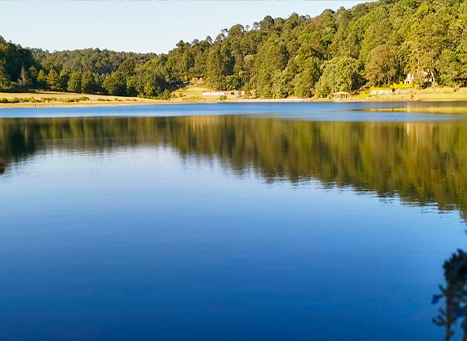

La ruta entre Avándaro y Pinal del Marquesado, en el municipio de Valle de Bravo, es un recorrido rodeado de bosques de pino y encino que permite disfrutar de algunos de los paisajes más representativos de la región. Se trata de un trayecto muy apreciado por senderistas, ciclistas y aficionados al turismo de aventura, gracias a sus caminos de montaña, vistas panorámicas y entornos naturales bien conservados. La zona combina tranquilidad, aire puro y contacto directo con la naturaleza.

La Laguna Negra es uno de los parajes naturales más atractivos de la zona de Valle de Bravo. Se trata de una laguna rodeada de bosques y montañas, conocida por su ambiente apacible y su belleza escénica. Diversas rutas de senderismo y ciclismo conducen hasta este cuerpo de agua, permitiendo disfrutar de miradores naturales y paisajes de gran valor ecológico durante el trayecto. Laguna Negra es especialmente popular para actividades de aventura y ecoturismo. Los visitantes pueden recorrer caminos de terracería y senderos forestales que atraviesan áreas poco intervenidas, ideales para la fotografía de naturaleza y la observación del paisaje.